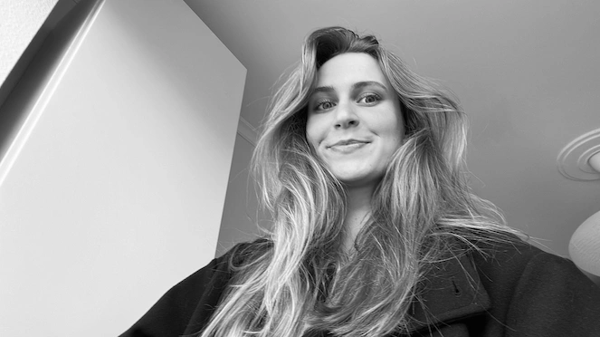
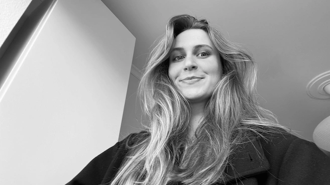

VELKOMMEN.
Mit navn er Anne-Sophie Falck Winther & jeg læser Multimediedesign på KEA. Dette er min digitale portfolio & her vil jeg dele mine kreative projekter og erfaringer.
Mit navn er Anne-Sophie Falck Winther & jeg læser Multimediedesign på KEA. Dette er min digitale portfolio & her vil jeg dele mine kreative projekter og erfaringer.
